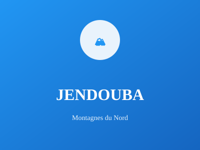

Région de forêts et montagnes

Région de forêts et de montagnes, Jendouba est riche en ressources naturelles. Elle offre des paysages verdoyants et un patrimoine archéologique important avec plusieurs sites romains.